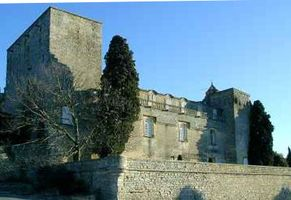
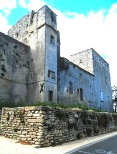
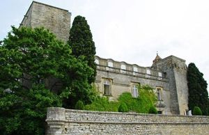
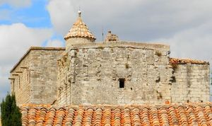
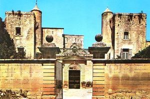
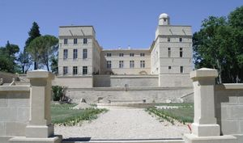
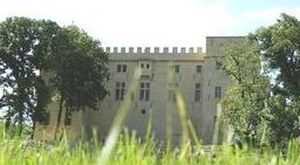
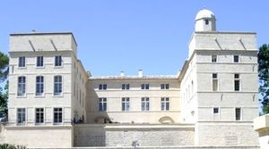
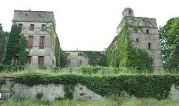

Recensement Jean-Claude Truffet
| Département | 30 — Gard |
| Canton | Calvisson |
| Commune | Villevieille |
| Type d'édifice | Forteresse |
| Période d'origine | X-XII |









Deux châteaux à Villevieille dont celui de Villevieille et celui de Pondres.
PONDRES, fief des Bernard d'Anduze au XIIe siècle qui inféodait la terres de Pondres aux frères Bernard et Jean Fraisnel leur descendant en été encore propriétaire au XIVe siècle passa ensuite à Bertrand de Ganges, par sa mère, Antoinette de Ganges, Antoine de Brueys, seigneur de Souvignargues et de St-Etienne d'Escatte, en devient le propriétaire. Il vend, le 30 août 1646, le château, terre et seigneurie de Pondres à Pierre Coutelle, secrétaire de la chambre du Roy, qui décède peu après, et par alliance aux Grefeuille et en 1590 aux Crouzet magistrat au présidial de Montpellier qui reconstruisirent le château, Pierre-Charles de Crouzet épousa Jeanne de Montlaur Bousquet en 1686, après la restauration Isidore de Montlaur musicien remania le château qui avait souffert à la Révolution une partie incendié, Les Villardi-Montlaur le vendirent en 1920 à monsieur Pécout. Propriété du conseil général du Gard de 2004 à 2006. VILLEVIEILLE, à partir du XIe siècle fief des Bermond d'Anduze, vassaux des comtes de Toulouse, certaines parties de l'édifice date du XIIIe siècle ce n'est que vers 1365 qu'un certain Pierre Scatisse, trésorier du domaine royal et des États du Languedoc, obtient la seigneurie. Il fit alors agrandir le château et y ajouta 3 nouvelles tours. Après plusieurs passations de propriété, c'est Bernard Pavée maître en la cour de Montpellier qui fit fortifier le château vers 1527. Le site devient en 1573 le quartier général du maréchal de Dampville dans le cadre du siège de Sommières et Louis XIII y logea en 1622 et en fit son état-major pour le deuxième siège de la cité Baronnie au XVIIe siècle élevée au titre de marquisat pour Abdias de Pavée qui y reçut Louis XIII en 1623. Lors de la Révolution, les bâtiments furent épargnés. La dernière des Pavée épouse le marquis de Préville, leur fille madame David-Beauregard ancêtre des propriétaires actuels. Alors qu'il fut inhabité de 1913 à 1960, il souffrit de l'occupation allemande. Depuis, c'est la famille de J. de David Beauregard, qui en entreprit la restauration. Saint-Louis et Louis XIII y séjournèrent tout comme Voltaire, Mirabeau et Cambacérès.
Pondres, construit au XIIe siècle, quadrilatère formé d'un corps de logis avec deux ailes en retour d'équerre flanquées aux quatre angles de tours carrées, la tour nord est surmonté d'une petite tourelle hexagonale couverte d'un dôme à Pans, il a été fortement remanié au début du XVIIe siècle. A partir du XIIe siècle, le donjon médiéval, a été ajouté au XVIIe siècle deux ailes reliées par un vaste corps central. De magnifiques terrasses et escaliers ouvrent la perspective vers l'est depuis la cour d'honneur revêtue de traditionnelles calades. Villevieille, château du Xe au XIIIe siècle, une grosse tour rectangulaire dit de Bermont, ce premier château fut saccagé et confisqué pour tomber dans le domaine royal suite à la guerre contre les Cathares. Remanié au XVIe siècle en forme de U autour de la cour d'honneur fermée à l'ouest par un mur bas couronné d'une balustrade qui ouvre sur une avant cour à laquelle on accède par un portail monumental percé dans l'ancien rempart, façades surélevées avec suppression des meneaux aux fenêtres, couronnées de fronton cintré, de vastes terrasses donnent sur les jardins, côté entrée deux tours carrées à toits en terrasses sont accolés sur la face intérieure une tourelle d'escalier à toit en poivrières. Les mâchicoulis sont supprimés à la Révolution.
Famille des Fraisnel Fief des Bermond d'Anduze
"
Château de Pondres et de Villevieille